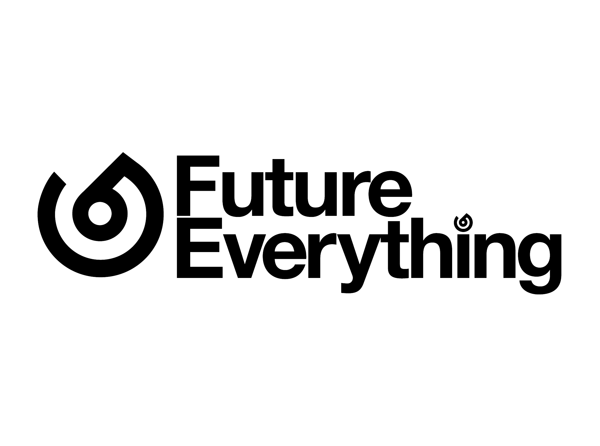

You are passionate about technology and writing high quality software. Delivering
world class software that delights our customers and exceeds the expectations of...
Junior Software Engineer
Sydney NSW
SXY Software
SXY Software is a leading provider of innovative software solutions for the
Global Pasta industry. We are currently seeking a Junior Software Engineer to...
Junior Software Engineer - Flight Management
Pyrmont NSW
Ansett Airlines
Coordinating product development between several impacted developers across various
Ansett sites. Experience as software developer in C++ in a Linux...
Junior Full Stack Developer
Macquarie Park NSW
Power People
As a Junior Full Stack Developer, you will report into the Lead Developer in
an Agile team and contribute to the development of world leading...
Graduate - Junior Database SQL/BI Developer | BI Team Finance
Elsewood Park NSW
9G Futures

We are looking for a talented Grad to Junior level Database SQL Developer to
work with the Business Intelligence IT team developing greenfield and brownfield
data warehouse and in-house reporting solution to meet business requirements.
Linux Software Engineer
Sydney
Fluffy Spider Technologies
We are looking for a Senior Linux Software Engineer to join our team,
working on cutting edge commercial embedded products in Medical and IoT.